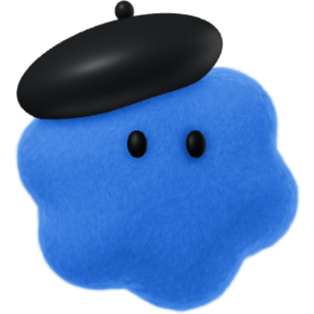

A character you recognize
An approved visual reference anchors the silhouette, materials, face, and signature details.
Recognizable characters. Beautiful, consistent spaces. Real screenshots and useful project details, brought together in one visual report.
A beautiful scene should help you understand what happened, what exists, and what needs your attention.
The screens carry the substance. The character, place, brand, and physical objects make the work recognizable and easier to follow.
Real product-page references become the content on the screens. A physical notebook holds the shortlist. The amber status makes clear this is research into a future option, not an installed or purchased system.
Illustrated project snapshot, October 2026. Zebra marks and product imagery identify source material; no endorsement is implied.
The method starts with reference material and verified work. It gives every visual element a reason to be there.


Sunlit cream and pale maple studio. Character at left, product screens at right. A notebook shortlist. Exact state: “Scanner research” · “Future option”.
Actual workflow ingredients, not fabricated examplesAn approved visual reference anchors the silhouette, materials, face, and signature details.
A reusable location brief sets the architecture, light, materials, and familiar landmarks.
Genuine captures supply the UI and source information. Keep original captures alongside the illustration when exact fidelity matters.
Evidence determines the status. Draft, blocked, checked, and deployed mean different things.
Approved logo variants, color, and materials tie the scene to the project without inventing a new identity.
These two actual reports use the same character identity and a related bright studio vocabulary. New canonical location packs are a proposed enhancement, not yet a demonstrated guarantee.
Character references and scene instructions guide continuity. Swappable character packs and persistent room references are documented in the public skill; cross-character and canonical-location tests remain pending.
Keep approved reference images, signature details, and variation rules together. Aim for recognizable characters across scenes, then review each result for drift.
Reuse a desk, studio, or workshop as a visual home. Change the project objects while retaining the scene’s landmarks, materials, and composition.
Use approved logos and brand assets in the right variant. Keep generated atmosphere separate from exact marks, UI captures, and text that must stay faithful.
The proposed workflow makes the visual report an extension of the project, with a clear route back to the underlying evidence.
Identify the deliverables, genuine screenshots, verified results, and open decisions. Keep private or unapproved material out.
Use approved characters, a reusable location, and the right brand variants. Give each visible object a purpose.
Check readability, visual continuity, and factual accuracy. Label concepts as concepts and keep genuine screenshots available separately.
Pair the image with concise status and real artifact links. Optional motion comes after still-image approval and a confirmed generation budget.
Illustrate Workbench turns verified work into visual reports. Organize Brand Assets keeps canonical originals, approved variants, provenance, and versions in order. Use them independently or package them together in a host-specific plugin.
METADATA VALIDATED · PUBLIC RECIPE & INSTALLATION TESTING PENDING
No. The draft contains two reusable agent skills and supporting reference contracts. Concrete host-native generation and correction recipes are included. No standalone API client or plugin manifest is included yet. Rendering still depends on an available image tool and the host’s permissions. Model access and usage fees are separate considerations.
The core uses the Agent Skills format. Its metadata has passed validation. The documented recipe is derived from the earlier illustrated workflow; the public package and installation still need end-to-end testing. Installation, tool access, and behavior vary by host. A tested compatibility list and installation instructions are release requirements, not claims made by this draft.
Yes. The research and software-progress images are actual illustrated work snapshots made with reference assets and genuine source captures. Their captions explain the original context and historical status. The side-by-side comparison shows the same character across two different reports, not a controlled location-consistency test. Images are not endorsements, live dashboards, or proof that every screen detail survived generation unchanged.
No. Reference-driven generation and review can improve continuity, but image models can still drift. Exact brand marks and critical UI details need faithful source assets and final inspection.
Pricing, licensing, release timing, and included support have not been decided. This review page does not accept payment or collect signup information.
The instruction package is available to inspect. The next release needs a tested installation path, renderer integration, and final pricing and license terms.